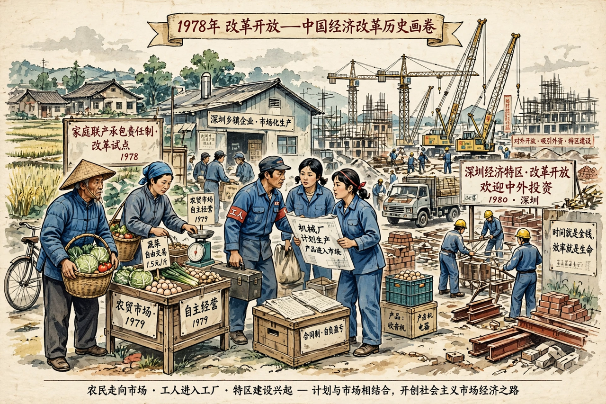

| Reform and opening up 改革开放 | |
|---|---|
 | |
| Began | December 1978 |
| Leader | Deng Xiaoping |
| Key policy | Socialist market economy (from 1992) |
The Chinese economic reform, known in China as reform and opening up, is the programme of economic changes begun in 1978 under Deng Xiaoping that moved China from a centrally planned economy toward a market-oriented system while retaining Communist Party political control. It is associated with Deng Xiaoping Theory.
Reform began in agriculture with the household responsibility system, first experimented with in Xiaogang village, Anhui, which decollectivised farming and let households sell surplus produce. Township and village enterprises flourished in the countryside. In 1980 special economic zones were created in Shenzhen, Zhuhai, Shantou and Xiamen to attract foreign capital.
Reforms extended to urban industry: state-owned enterprises gained autonomy, dual-track pricing allowed market sales above plan quotas, and coastal cities opened to trade. Inflation and corruption fuelled discontent in the late 1980s and reform stalled. Deng's 1992 Southern Tour relaunched liberalisation, and the 1992 Party Congress adopted the goal of a socialist market economy.
Under Jiang Zemin and Zhu Rongji, tax, banking and state-enterprise reforms accelerated; many smaller state firms were privatised ("grasp the large, let go of the small"). China joined the World Trade Organization in 2001, spurring exports. Growth averaged near 10% annually for three decades, urbanisation rose sharply, and hundreds of millions left extreme poverty.
Economists debate the model — gradual, experimental "crossing the river by feeling the stones" versus shock therapy elsewhere — and its mix of state direction and markets, sometimes labelled state capitalism. Challenges include inequality, debt, environmental damage, demographic decline and tensions over trade and technology. A parallel market transition in Vietnam is Đổi Mới.